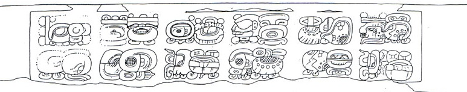

Dos Pilas Hieroglyphic Stairway 2: East Section, Step 6

Reading:
A1
Distance Number: 8 K'ins, 4 Winals (should be 9 K'ins)
B1
Calendar Round: 6 Ahaw 13 Mak
A2
????? 5 tun
B2
i u-ti
"and then it happened"
C1
Calendar Round: [4] Muluk 2 K'umk'u
Summary of date: 4.9 days after the 5-tun ending 6 Ahaw, 13 Mak (9.10.15.0.0), it was 4 Muluk 2 K'umk'u (9.10.15.4.9). BCK would be 1.2.11.7 days old